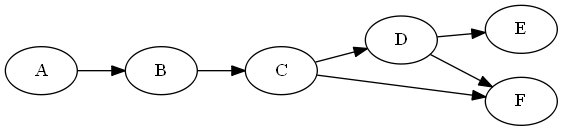

Dependency Tracking
Table of Contents
1 Dependency Graph
First, we define a directed graph of dependencies:

2 Dependency Table
The dependency relationships can be captured in a table, enumerating the shortest path (distance d) between any two nodes f and t. A direct dependency is defined as one of distance d = 1, while a transitive dependency is defined as one of distance d > 1. Note that in general there may multiple paths from f to t resulting in a transitive dependency; we are only interested in capturing the one with the shortest distance.
| f | t | d |
|---|---|---|
| A | B | 1 |
| B | C | 1 |
| A | C | 2 |
| C | D | 1 |
| B | D | 2 |
| A | D | 3 |
| D | E | 1 |
| C | E | 2 |
| B | E | 3 |
| A | E | 4 |
| D | F | 1 |
| C | F | 1 |
| B | F | 3 |
| A | F | 4 |
2.1 Adding a dependency
We only add direct dependencies to our table. But we need to take into account the case where a dependency already exists:
// Adding the dependency from C to F def existing = pm.query("SELECT UNIQUE FROM Dependency WHERE f = 'C' AND t = 'F'").execute() if (!existing) { pm.makePersistent(new Dependecy(f: 'C', t: 'F', d: 1) else { existing.d = 1 // TODO: for all nodes that depend on C, reduce their distance by the difference between the previous d(C,F) - 1 (e.g. if the previous distance was 3, reduce the distance of all dependencies on F that pass through C by 2. } // TODO: Update transitive dependencies